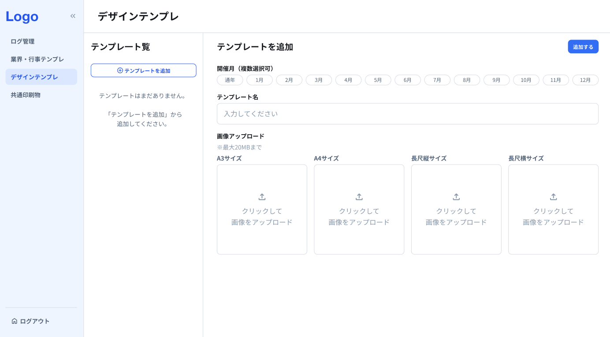
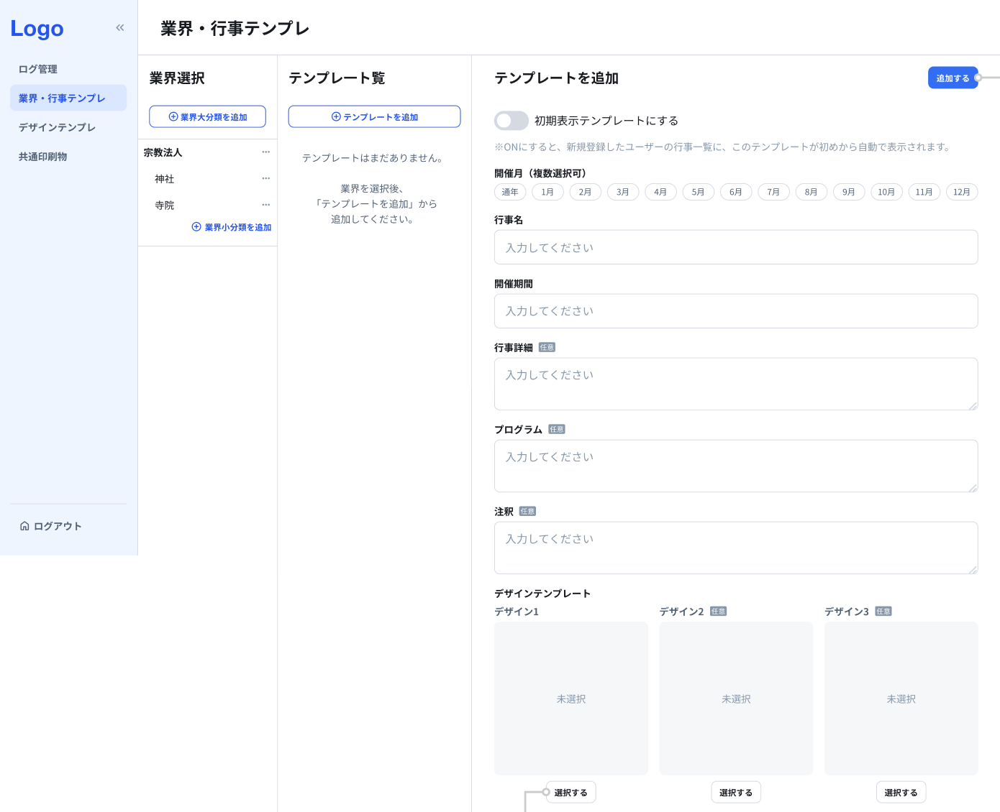
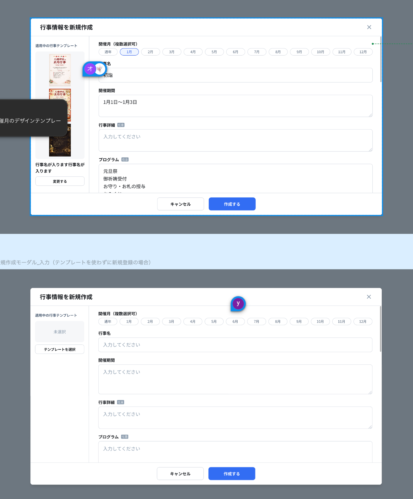
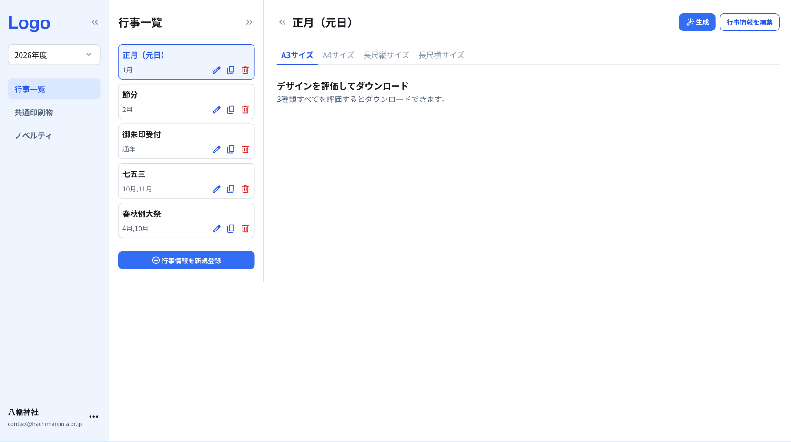
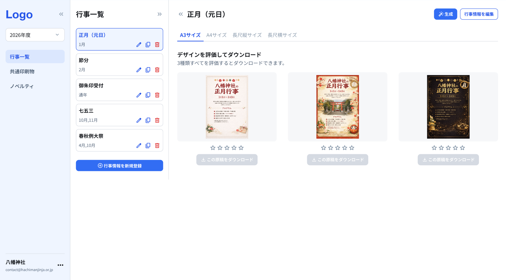
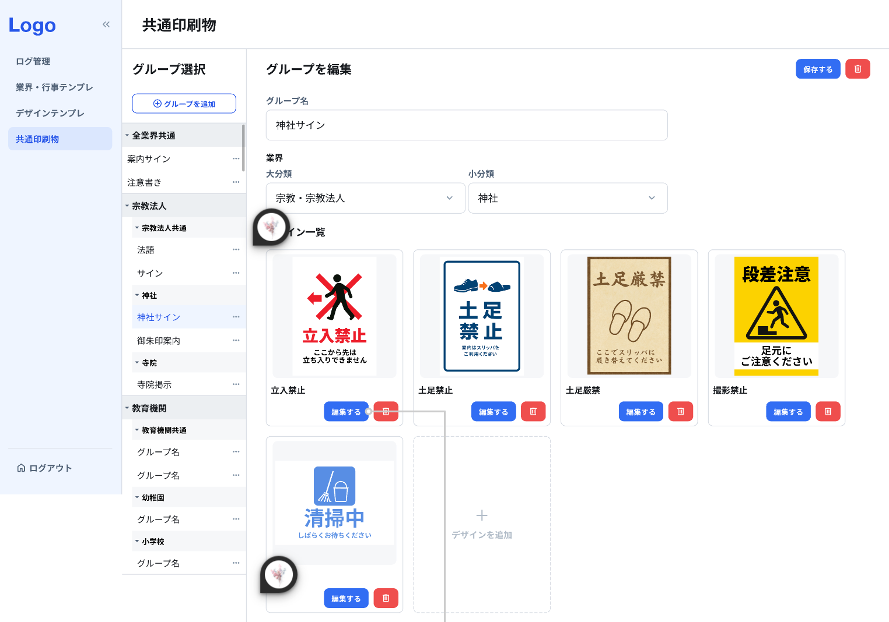
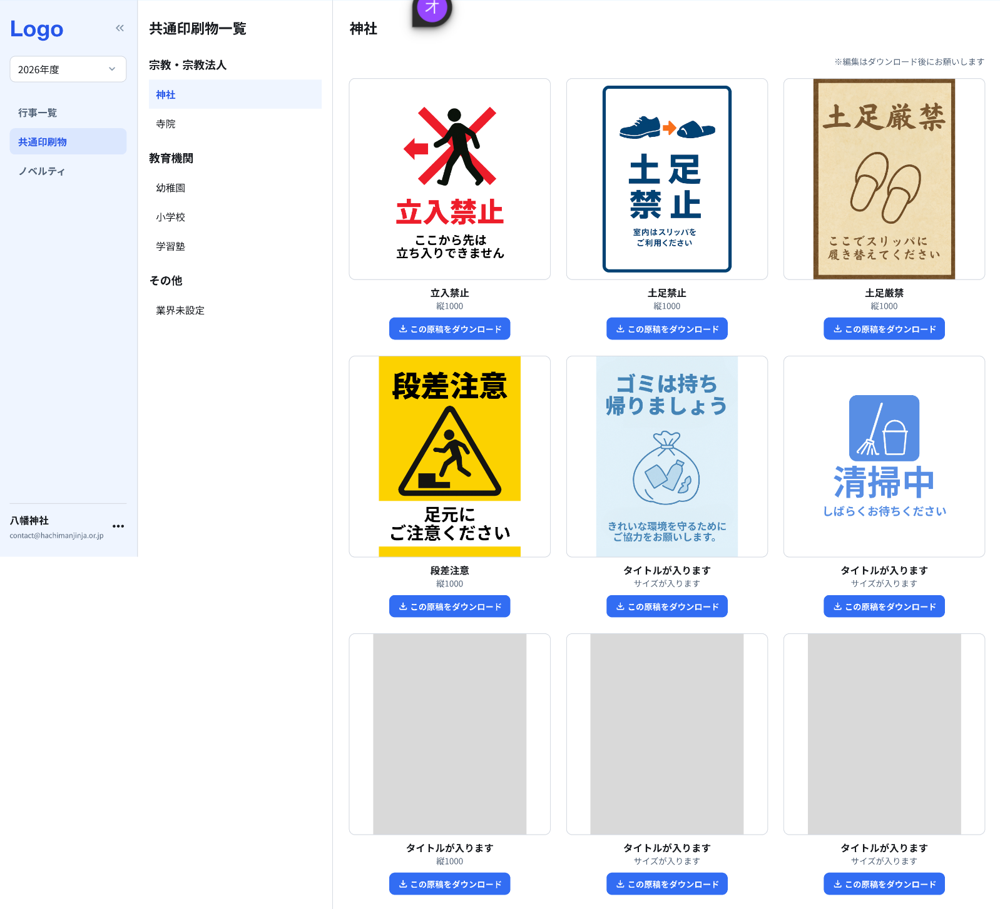

元原稿画像管理 & AI画像生成 API
2026/04/17 版ブラザーが用意した背景画像に、行事情報のテキストをAIで配置して印刷物を生成するシステム
管理者がデザインテンプレート × 行事テンプレートを準備。
ユーザーが行事情報を入力し、AIで背景画像にテキストを配置した原稿を生成。
3デザイン × 4サイズで展開。評価後にダウンロード。
管理者が業界別にグループを作り、印刷物画像を登録。
AI生成なし。ブラザーが用意した完成画像をそのまま配布。
ユーザーはダウンロードするだけ。
| Bubble側 | Brother側 | |
|---|---|---|
| 管理するもの | デザインテンプレート（メタ情報） 行事テンプレート 行事データ 評価データ 共通印刷物グループ |
背景画像（Source Image DB） 生成画像（Generated Image DB） Generative AI File Storage |
| 画像の保存 | 保存しない sourceImageId / imageUrl をDBに保持するだけ |
全画像をFile Storageで管理 |
| APIを呼ぶタイミング |
GET /source-images テンプレート登録時の画像選択 POST /generated-images 原稿生成時 POST /{id}/regenerate 再生成時 DELETE /{id} 生成画像削除時 |
|
| STEP | やること | 誰が | API |
|---|---|---|---|
| 0 | 背景画像をSource Image DBに登録 | Brother | - |
| 1 | デザインテンプレート登録（画像選択 + メタ情報） | 管理者 | GET /source-images |
| 2 | 行事テンプレート作成（業界×デザイン紐付け） | 管理者 | なし |
| 3 | 行事を新規作成（テキスト入力） | ユーザー | なし |
| 4 | 原稿を生成（AI生成） | ユーザー | POST /generated-images |
| 5 | 評価・ダウンロード | ユーザー | なし（理想） |
詳細は「原稿登録〜ダウンロード」タブ参照
2つのDBでソース画像と生成画像を管理
事前に用意された元原稿画像の情報を管理
一覧表示、詳細表示、選択対象として利用
Read Only| フィールド | 説明 | いつ使う |
|---|---|---|
| sourceImageIdPK | 元原稿画像ID | STEP1: Bubble DBに紐付け保存 / STEP4: POST時に送る |
| fileName | ファイル名 | STEP1: 画像選択時の表示 |
| category | 分類 | STEP1: 行事 or 共通印刷物でフィルタ |
| size | サイズ | STEP1: サイズでフィルタ（パラメータ追加が必要） |
| fileKey | 元画像ファイル識別子 | Bubble側は使わない（Brother内部用） |
| thumbnailKey | サムネイル識別子 | Bubble側は使わない（APIがthumbnailUrlに変換） |
| status | 状態 | STEP1: 有効な画像のみ表示するフィルタ |
| createdAt | 作成日時 | 用途不明 |
| updatedAt | 更新日時 | 用途不明 |
| description任意 | 説明 | 用途不明 |
| tags任意 | タグ | 用途不明 |
| version任意 | バージョン | 用途不明 |
元原稿画像 + 入れ替えテキストをもとに生成された画像情報を管理
生成履歴、状態管理、再生成の管理も担当
CRUD| フィールド | 説明 | いつ使う |
|---|---|---|
| generatedImageIdPK | 生成画像ID | STEP4: POSTレスポンスで受取 → Bubble DBに保存。再生成/削除時にも使用 |
| sourceImageId | 元原稿画像ID | どの背景画像から生成したか（参照用） |
| userId | ユーザID | どのユーザーの生成物か |
| replaceText | 差し替えテキスト | STEP4: リクエストで送る（ただし要拡張） |
| fileName | ファイル名 | 用途不明 |
| status | 生成状態 | STEP4: 生成中/完了/失敗の判定 |
| fileKey | 生成画像ファイル識別子 | Bubble側は使わない（APIがimageUrlに変換） |
| parentGeneratedImageId | 再生成元ID | 再生成時の履歴追跡用 |
| size | サイズ | どのサイズで生成したか |
| createdAt | 作成日時 | 履歴管理 |
| updatedAt | 更新日時 | 履歴管理 |
| deletedAt任意 | 削除日時 | 論理削除用 |
| version任意 | バージョン | 用途不明 |
全7エンドポイント（元原稿画像系 2 + 生成画像系 5）
* 非同期処理 - 即座にgeneratedImageIdとstatus=RUNNINGを返却し、バックグラウンドで画像生成を実行
* imageUrl は status=COMPLETED のときのみ返却
* 新しいgeneratedImageIdが発行され、元のIDはparentGeneratedImageIdとして記録
原稿一覧画面の表示から、特定原稿の詳細取得までのフロー
sequenceDiagram
autonumber
actor User as ユーザ
participant FE as Frontend
participant API as Backend API
participant SIDB as Source Image DB
participant FS as File Storage
User ->> FE: 原稿一覧画面を開く
FE ->> API: GET /source-images
API ->> SIDB: 原稿一覧メタ情報を取得
SIDB -->> API: sourceImageId, title, thumbnailFileKey, status
API ->> FS: thumbnailFileKey から表示用URLを生成
FS -->> API: thumbnailUrl
API -->> FE: 原稿一覧（thumbnailUrl 含む）
FE -->> User: サムネイル画像一覧を表示
User ->> FE: 特定原稿を選択
FE ->> API: GET /source-images/{sourceImageId}
API ->> SIDB: 特定原稿の詳細取得
SIDB -->> API: title, imageFileKey, description, status
API ->> FS: imageFileKey から表示用URLを生成
FS -->> API: imageUrl
API -->> FE: 原稿詳細（imageUrl 含む）
FE -->> User: 原稿詳細・原稿画像を表示
特定原稿からテキスト差し替え画像を生成し、結果を取得するまでのフロー
sequenceDiagram
autonumber
actor User as ユーザ
participant FE as Frontend
participant API as Backend API
participant SIDB as Source Image DB
participant GIDB as Generated Image DB
participant AI as Generative AI
participant FS as File Storage
User ->> FE: 特定原稿詳細を開く
FE ->> API: GET /source-images/{sourceImageId}
API ->> SIDB: 原稿詳細を取得
SIDB -->> API: 原稿メタ情報を返却
API ->> FS: 原稿画像URLを取得
FS -->> API: sourceImageUrl
API -->> FE: 原稿詳細 + sourceImageUrl
FE -->> User: 原稿詳細を表示
User ->> FE: ターゲットテキストと差し替えテキストを入力し「生成」を実行
FE ->> API: POST /generated-images { sourceImageId, originalText, replaceText }
API -->> FE: generatedImageId, status = RUNNING
FE -->> User: 生成受付/生成中を表示
API ->> SIDB: sourceImageId の存在確認
SIDB -->> API: 原稿情報を返却
API ->> GIDB: 生成レコード作成 status = PENDING
GIDB -->> API: generatedImageId を返却
API ->> AI: 元原稿 + replaceText で画像生成依頼
AI -->> API: 生成画像データを返却
API ->> FS: 生成画像を保存
FS -->> API: generatedFileKey を返却
API ->> GIDB: status = COMPLETED, fileKey = generatedFileKey を更新
GIDB -->> API: 更新完了
API -->> FE: generatedImageId, status = COMPLETED
FE -->> User: 生成完了を表示
User ->> FE: 生成結果を表示
FE ->> API: GET /generated-images/{generatedImageId}
API ->> GIDB: generatedImageId で生成結果取得
GIDB -->> API: status, fileKey を返却
API ->> FS: fileKey から表示用URLを取得
FS -->> API: generatedImageUrl
API -->> FE: generatedImageId, status = COMPLETED, generatedImageUrl
FE -->> User: 生成画像を表示
管理者のテンプレート登録から、ユーザーの画像生成・ダウンロードまでの一連の流れ（整理中）
事前に用意された元原稿画像の情報を管理
一覧表示、詳細表示、選択対象として利用
Read Only| フィールド | 説明 |
|---|---|
| sourceImageIdPK | 元原稿画像ID |
| fileName | ファイル名 |
| category | 分類（行事 / 共通印刷物？） |
| size | サイズ |
| fileKey | 元画像ファイル識別子 |
| thumbnailKey | サムネイル識別子 |
| status | 状態 |
| createdAt | 作成日時 |
| updatedAt | 更新日時 |
| description任意 | 説明 |
| tags任意 | タグ |
| version任意 | バージョン |
GET /source-images で画像一覧を取得し、サイズごとに画像を紐づける。sourceImageId の紐付けをBubble DBに保存する。Brother側に登録済みの画像一覧を取得して、管理者が選択する
既存API size パラメータの追加が必要

これどうするの？
テンプレートなしで行事を作成した場合、デザインテンプレート（背景画像）が紐づいていない。
この状態で「生成」ボタンを押したらどうなる？sourceImageId がないので生成できないはず。
→ 要確認

POST /generated-images で行事情報をAPIに渡して原稿を生成する。行事情報を渡して原稿画像を生成する（非同期）
既存API リクエスト構造の拡張が必要originalText / replaceText の1組では複数テキスト項目を渡せない
確認が必要なポイント
POST /generated-images/batch 等）を用意できるか？前提: 非同期APIを並列で走らせられる / サイズは7サイズ / デザインテンプレートは最大3つ（1つ必須、2つ任意）
| トリガー | ユーザーがサイズタブ（A3等）で「生成」押下 |
| API呼び出し | 3回（デザイン1,2,3）を並列 |
| メリット | API負荷が軽い（1回あたり最大3リクエスト） |
| デメリット | ユーザーがサイズごとに生成ボタンを押す必要あり |
| トリガー | ユーザーが「生成」1回押下 |
| API呼び出し | 最低7回（1デザイン×7サイズ）〜最大21回（3デザイン×7サイズ）を並列 |
| メリット | ユーザー体験が良い（1回押すだけ） |
| デメリット | 最大21回の並列リクエスト。Brother側のレート制限次第 |
→ どちらのパターンにするか、Brother側のレート制限を踏まえて要検討


GET /generated-images/{id} を呼んで画像URLを取得する必要がある| タイミング | やること | API |
|---|---|---|
| 初回生成時（STEP4） | POSTのレスポンスで imageUrl を受け取り、Bubble DBに保存 | POST /generated-images |
| 次回以降の表示・DL | Bubble DBから imageUrl を取得して表示・DL | APIは呼ばない |
| 行事情報を変更した時 | 再生成して新しい imageUrl でBubble DBを更新 | POST /{id}/regenerate |
| imageUrl期限切れ時 | URLを再取得 | GET /generated-images/{id} ※有効期限がある場合のみ |
確認が必要なポイント
POST /generated-images のレスポンスに imageUrl を含めてもらえるか？GET /generated-images/{id} でURL再取得が必要になるケースがある生成画像の詳細（画像URL含む）を取得する
既存API / 理想の場合はimageUrl期限切れ時のみ使用フローを踏まえたAPI利用状況の整理
| API | 使用箇所 | 備考 |
|---|---|---|
| GET /source-images | STEP1: デザインテンプレート登録時に画像選択 | sizeパラメータの追加が必要 |
| POST /generated-images | STEP4: 原稿生成 | リクエスト構造の拡張が必要 |
| POST /generated-images/{id}/regenerate | 行事情報変更時の再生成 | |
| DELETE /generated-images/{id} | 生成画像の削除 |
| API | 使うかもしれないケース | 判断基準 |
|---|---|---|
| GET /generated-images/{id} | STEP5: imageUrlの期限切れ時にURL再取得 | POSTレスポンスにimageUrlが含まれ、かつ有効期限なし → 不要 有効期限あり → 必要 |
| API | 不要な理由 |
|---|---|
| GET /source-images/{sourceImageId} | 個別詳細取得。一覧API（GET /source-images）でthumbnailUrl等が返るため、個別取得は不要 |
| GET /generated-images | 生成画像一覧取得。行事×生成画像の紐付けはBubble DBで管理するため、Brother側の一覧APIは不要 |
AI生成なし。Brother DBから画像を選択して、そのままユーザーに配布する
前提条件
Source Image DBの category が行事用 / 共通印刷物の区分であること。
GET /source-images?category=common のように共通印刷物の画像だけ取得できる想定。
→ category の値についてはブラザーに要確認
| 行事 | 共通印刷物 | |
|---|---|---|
| テキスト入力 | あり（行事名・期間等） | なし |
| AI生成 | あり | なし |
| サイズ展開 | 4サイズ × 3デザイン | 1画像のみ |
| 画像の出処 | Brother DB選択 | Brother DB選択 |
| グルーピング | 業界→行事テンプレ→デザインテンプレ | 業界→グループ→デザイン一覧 |
| 使用API | GET + POST /generated-images 等 | GET /source-images のみ |
GET /source-images?category=common で共通印刷物の画像一覧を取得し、1枚を選択する。sourceImageId の紐付けをBubble DBに保存する。共通印刷物用の画像一覧を取得する
既存API
sourceImageId に紐づく画像URLで表示する。APIは呼ばない。確認が必要なポイント
GET /source-images/{id} でURL再取得が必要になるかも
| API | 使用箇所 |
|---|---|
| GET /source-images | STEP2: 共通印刷物画像の選択（category=common） |